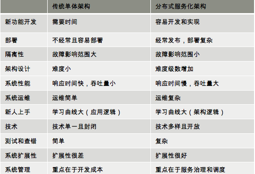
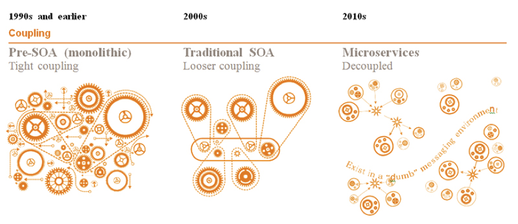

- 000 开篇词 洞悉技术的本质，享受科技的乐趣.md
- 001 程序员如何用技术变现（上）.md
- 002 程序员如何用技术变现（下）.md
- 003 Equifax信息泄露始末.md
- 004 从Equifax信息泄露看数据安全.md
- 005 何为技术领导力.md
- 006 如何拥有技术领导力.md
- 007 推荐阅读：每个程序员都该知道的事.md
- 008 Go语言，Docker和新技术.md
- 009 答疑解惑：渴望、热情和选择.md
- 010 如何成为一个大家愿意追随的Leader？.md
- 011 程序中的错误处理：错误返回码和异常捕捉.md
- 012 程序中的错误处理：异步编程和最佳实践.md
- 013 魔数 0x5f3759df.md
- 014 推荐阅读：机器学习101.md
- 015 时间管理：同扭曲时间的事儿抗争.md
- 016 时间管理：投资赚取时间.md
- 017 故障处理最佳实践：应对故障.md
- 018 故障处理最佳实践：故障改进.md
- 019 答疑解惑：我们应该能够识别的表象和本质.md
- 020 分布式系统架构的冰与火.md
- 021 从亚马逊的实践，谈分布式系统的难点.md
- 022 分布式系统的技术栈.md
- 023 分布式系统关键技术：全栈监控.md
- 024 分布式系统关键技术：服务调度.md
- 025 分布式系统关键技术：流量与数据调度.md
- 026 洞悉PaaS平台的本质.md
- 027 推荐阅读：分布式系统架构经典资料.md
- 028 编程范式游记（1）- 起源.md
- 029 编程范式游记（2）- 泛型编程.md
- 030 编程范式游记（3） - 类型系统和泛型的本质.md
- 031 Git协同工作流，你该怎样选.md
- 032 推荐阅读：分布式数据调度相关论文.md
- 033 编程范式游记（4）- 函数式编程.md
- 034 编程范式游记（5）- 修饰器模式.md
- 035 编程范式游记（6）- 面向对象编程.md
- 036 编程范式游记（7）- 基于原型的编程范式.md
- 037 编程范式游记（8）- Go 语言的委托模式.md
- 038 编程范式游记（9）- 编程的本质.md
- 039 编程范式游记（10）- 逻辑编程范式.md
- 040 编程范式游记（11）- 程序世界里的编程范式.md
- 041 弹力设计篇之“认识故障和弹力设计”.md
- 042 弹力设计篇之“隔离设计”.md
- 043 弹力设计篇之“异步通讯设计”.md
- 044 弹力设计篇之“幂等性设计”.md
- 045 弹力设计篇之“服务的状态”.md
- 046 弹力设计篇之“补偿事务”.md
- 047 弹力设计篇之“重试设计”.md
- 048 弹力设计篇之“熔断设计”.md
- 049 弹力设计篇之“限流设计”.md
- 050 弹力设计篇之“降级设计”.md
- 051 弹力设计篇之“弹力设计总结”.md
- 052 区块链技术 - 区块链的革命性及技术概要.md
- 053 区块链技术 - 区块链技术细节 - 哈希算法.md
- 054 区块链技术 - 区块链技术细节 - 加密和挖矿.md
- 055 区块链技术 - 去中心化的共识机制.md
- 056 区块链技术 - 智能合约.md
- 057 区块链技术 - 传统金融和虚拟货币.md
- 058 管理设计篇之分布式锁.md
- 059 管理设计篇之配置中心.md
- 060 管理设计篇之边车模式.md
- 061 管理设计篇之服务网格.md
- 062 管理设计篇之网关模式.md
- 063 管理设计篇之部署升级策略.md
- 064 性能设计篇之缓存.md
- 065 性能设计篇之异步处理.md
- 066 性能设计篇之数据库扩展.md
- 067 性能设计篇之秒杀.md
- 068 性能设计篇之边缘计算.md
- 069 程序员练级攻略（2018）：开篇词.md
- 070 程序员练级攻略（2018）：零基础启蒙.md
- 071 程序员练级攻略（2018）：正式入门.md
- 072 程序员练级攻略（2018）：程序员修养.md
- 073 程序员练级攻略（2018）：编程语言.md
- 074 程序员练级攻略：理论学科.md
- 075 程序员练级攻略（2018）：系统知识.md
- 076 程序员练级攻略（2018）：软件设计.md
- 077 程序员练级攻略（2018）：Linux系统、内存和网络.md
- 078 程序员练级攻略（2018）：异步IO模型和Lock-Free编程.md
- 079 程序员练级攻略（2018）：Java底层知识.md
- 080 程序员练级攻略（2018）：数据库.md
- 081 程序员练级攻略（2018）：分布式架构入门.md
- 082 程序员练级攻略（2018）：分布式架构经典图书和论文.md
- 083 程序员练级攻略（2018）：分布式架构工程设计.md
- 084 程序员练级攻略（2018）：微服务.md
- 085 程序员练级攻略（2018）：容器化和自动化运维.md
- 086 程序员练级攻略（2018）：机器学习和人工智能.md
- 087 程序员练级攻略（2018）：前端基础和底层原理.md
- 088 程序员练级攻略（2018）：前端性能优化和框架.md
- 089 程序员练级攻略（2018）：UIUX设计.md
- 090 程序员练级攻略（2018）：技术资源集散地.md
- 091 程序员面试攻略：面试前的准备.md
- 092 程序员面试攻略：面试中的技巧.md
- 093 程序员面试攻略：面试风格.md
- 094 程序员面试攻略：实力才是王中王.md
- 095 高效学习：端正学习态度.md
- 096 高效学习：源头、原理和知识地图.md
- 097 高效学习：深度，归纳和坚持实践.md
- 098 高效学习：如何学习和阅读代码.md
- 099 高效学习：面对枯燥和量大的知识.md
- 100 高效沟通：Talk和Code同等重要.md
- 101 高效沟通：沟通阻碍和应对方法.md
- 102 高效沟通：沟通方式及技巧.md
- 103 高效沟通：沟通技术.md
- 104 高效沟通：好老板要善于提问.md
- 105 高效沟通：好好说话的艺术.md
- 106 加餐 谈谈我的“三观”.md
- 107 结束语 业精于勤，行成于思.md
020 分布式系统架构的冰与火
最近几年，我们一直在谈论各式各样的架构，如高并发架构、异地多活架构、容器化架构、微服务架构、高可用架构、弹性化架构等。还有和这些架构相关的管理型的技术方法，如 DevOps、应用监控、自动化运维、SOA 服务治理、去 IOE 等。面对这么多纷乱的技术，我看到很多团队或是公司都是一个一个地去做这些技术，非常辛苦，也非常累。这样的做法就像我们在撑开一张网里面一个一个的网眼。
其实，只要我们能够找到这张网的“纲”，我们就能比较方便和自如地打开整张网了。那么，这张“分布式大网”的总线——“纲”在哪里呢？我希望通过这一系列文章可以让你找到这个“纲”，从而能让你更好更有效率地做好架构和工程。
分布式系统架构的冰与火
首先，我们需要阐述一下为什么需要分布式系统，而不是传统的单体架构。也许这对你来说已经不是什么问题了，但是请允许我在这里重新说明一下。使用分布式系统主要有两方面原因。
- 增大系统容量。我们的业务量越来越大，而要能应对越来越大的业务量，一台机器的性能已经无法满足了，我们需要多台机器才能应对大规模的应用场景。所以，我们需要垂直或是水平拆分业务系统，让其变成一个分布式的架构。
- 加强系统可用。我们的业务越来越关键，需要提高整个系统架构的可用性，这就意味着架构中不能存在单点故障。这样，整个系统不会因为一台机器出故障而导致整体不可用。所以，需要通过分布式架构来冗余系统以消除单点故障，从而提高系统的可用性。
当然，分布式系统还有一些优势，比如：
-
因为模块化，所以系统模块重用度更高；
-
因为软件服务模块被拆分，开发和发布速度可以并行而变得更快；
-
系统扩展性更高；
-
团队协作流程也会得到改善；
-
……
不过，这个世界上不存在完美的技术方案，采用任何技术方案都是“按下葫芦浮起瓢”，都是有得有失，都是一种 trade-off。也就是说，分布式系统在消除上述问题的同时，也给我们带来了其他的问题。因此，我们需要清楚地知道分布式系统所带来的问题。
下面这个表格比较了单体应用和分布式架构的优缺点。

从上面的表格我们可以看到，分布式系统虽然有一些优势，但也存在一些问题。
- 架构设计变得复杂（尤其是其中的分布式事务）。
- 部署单个服务会比较快，但是如果一次部署需要多个服务，部署会变得复杂。
- 系统的吞吐量会变大，但是响应时间会变长。
- 运维复杂度会因为服务变多而变得很复杂。
- 架构复杂导致学习曲线变大。
- 测试和查错的复杂度增大。
- 技术可以很多样，这会带来维护和运维的复杂度。
- 管理分布式系统中的服务和调度变得困难和复杂。
也就是说，分布式系统架构的难点在于系统设计，以及管理和运维。所以，分布式架构解决了“单点”和“性能容量”的问题，但却新增了一堆问题。而对于这些新增的问题，还会衍生出更多的子问题，这就需要我们不断地用各式各样的技术和手段来解决这些问题。
这就出现了我前面所说的那些架构方式，以及各种相关的管理型的技术方法。这个世界就是这样变得复杂起来的。
分布式系统的发展
从 20 世纪 70 年代的模块化编程，80 年代的面向事件设计，90 年代的基于接口 / 构件设计，这个世界很自然地演化出了 SOA——基于服务的架构。SOA 架构是构造分布式计算应用程序的方法。它将应用程序功能作为服务发送给最终用户或者其他服务。它采用开放标准与软件资源进行交互，并采用标准的表示方式。
开发、维护和使用 SOA 要遵循以下几条基本原则。
- 可重用，粒度合适，模块化，可组合，构件化以及有互操作性。
- 符合开放标准（通用的或行业的）。
- 服务的识别和分类，提供和发布，监控和跟踪。
但 IBM 搞出来的 SOA 非常重，所以对 SOA 的裁剪和优化从来没有停止过。比如，之前的 SOAP、WSDL 和 XML 这样的东西基本上已经被抛弃了，而改成了 RESTful 和 JSON 这样的方式。而 ESB（Enterprise Service Bus，企业服务总线）这样非常重要的东西也被简化成了 Pub/Sub 的消息服务……
不过，SOA 的思想一直延续着。所以，我们现在也不说 SOA 了，而是说分布式服务架构了。
下面是一个 SOA 架构的演化图。

我们可以看到，面向服务的架构有以下三个阶段。
- 20 世纪 90 年代前，是单体架构，软件模块高度耦合。当然，这张图同样也说明了有的 SOA 架构其实和单体架构没什么两样，因为都是高度耦合在一起的。就像图中的齿轮一样，当你调用一个服务时，这个服务会调用另一个服务，然后又调用另外的服务……于是整个系统就转起来了。但是这本质是比较耦合的做法。
- 而 2000 年左右出现了比较松耦合的 SOA 架构，这个架构需要一个标准的协议或是中间件来联动其它相关联的服务（如 ESB）。这样一来，服务间并不直接依赖，而是通过中间件的标准协议或是通讯框架相互依赖。这其实就是 IoC（控制反转）和 DIP（依赖倒置原则）的设计思想在架构中的实践。它们都依赖于一个标准的协议或是一个标准统一的交互方式，而不是直接调用。
- 而 2010 年后，出现了微服务架构，这个架构更为松耦合。每一个微服务都能独立完整地运行（所谓的自包含），后端单体的数据库也被微服务这样的架构分散到不同的服务中。而它和传统 SOA 的差别在于，服务间的整合需要一个服务编排或是服务整合的引擎。就好像交响乐中需要有一个指挥来把所有乐器编排和组织在一起。
一般来说，这个编排和组织引擎可以是工作流引擎，也可以是网关。当然，还需要辅助于像容器化调度这样的技术方式，如 Kubernetes。在 Martin Fowler 的 Microservices 这篇文章中有详细描述。
微服务的出现使得开发速度变得更快，部署快，隔离性高，系统的扩展度也很好，但是在集成测试、运维和服务管理等方面就比较麻烦了。所以，需要一套比较好的微服务 PaaS 平台。就像 Spring Cloud 一样需要提供各种配置服务、服务发现、智能路由、控制总线……还有像 Kubernetes 提供的各式各样的部署和调度方式。
没有这些 PaaS 层的支撑，微服务也是很难被管理和运维的。好在今天的世界已经有具备了这些方面的基础设施，所以，采用微服务架构，我认为只是一个时间问题了。
小结
好了，今天的内容就到这里。相信通过今天的学习，你应该已经对为什么需要分布式系统，而不是传统的单体架构，有了清晰的认识。并且对分布式系统的发展历程了然于心。下一篇文章，我将结合亚马逊的分布式架构实践，来谈谈分布式系统架构的技术难点及应对方案。